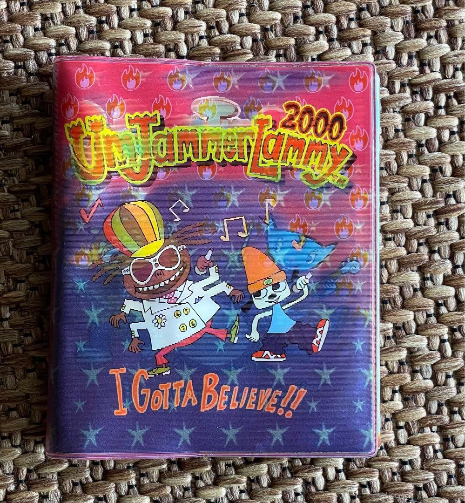
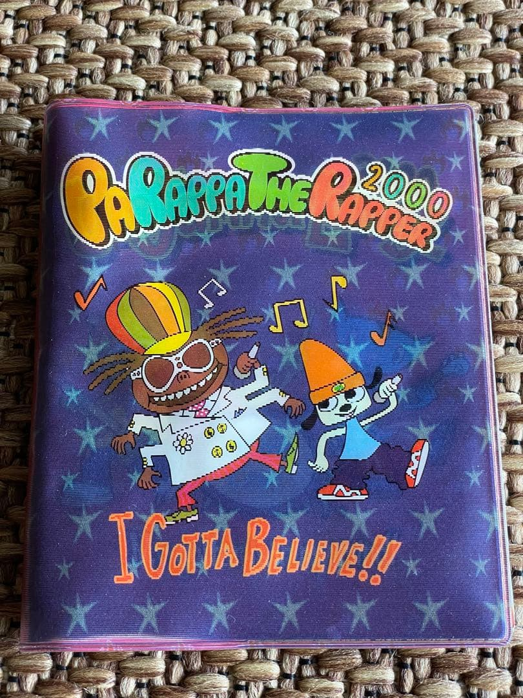
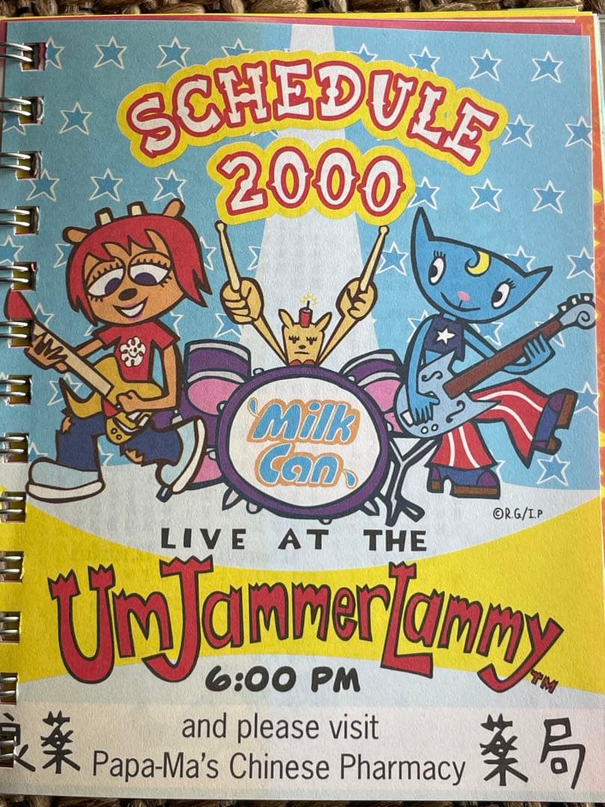
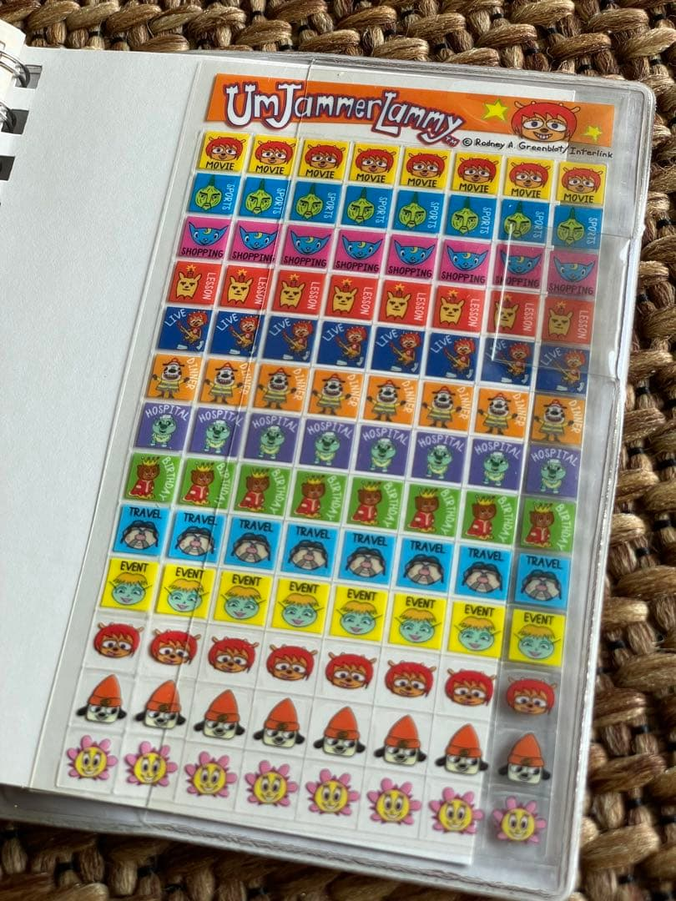
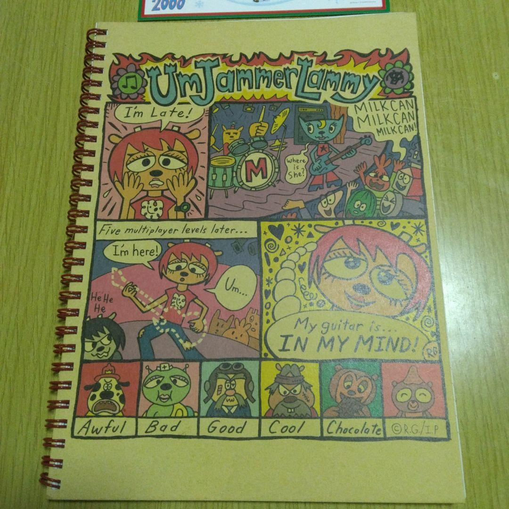
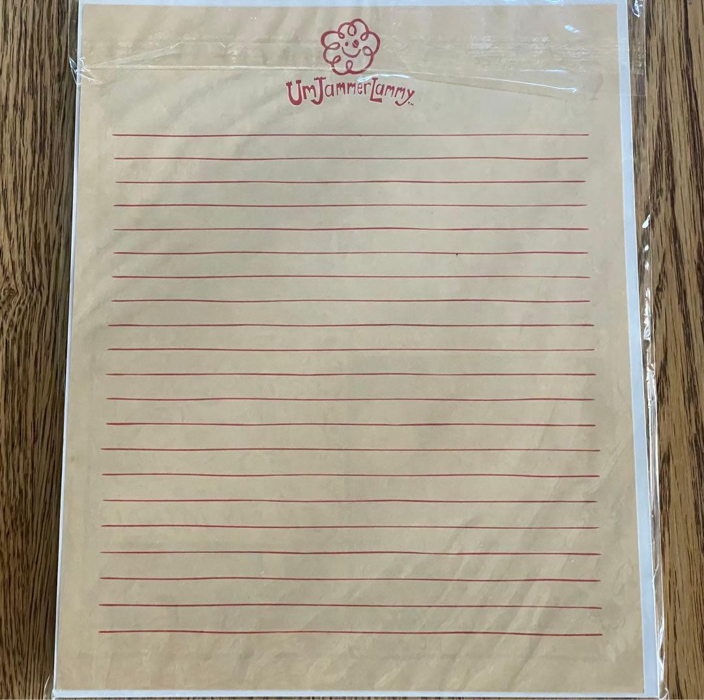

★ UM JAMMER LAMMY — STATIONERY ★★ ウンジャマ・ラミー — 文房具 ★
The Um Jammer Lammy 2000 stationery line — paper goods and desk items issued by Sony Creative Products around the 1999–2000 release, all under the © Rodney A. Greenblat / Interlink licence. Highlights include the clear-vinyl ring-binder organiser covers (carried in both Um Jammer Lammy and PaRappa The Rapper artwork), the dated "Schedule 2000" pocket planner with its illustrated monthly and weekly spreads, a comic-cover spiral notebook, and a MilkCan letter set.
ウンジャマ・ラミー2000の文房具シリーズ。1999〜2000年の展開期にソニー・クリエイティブプロダクツが発売した紙物・デスク雑貨で、いずれも © Rodney A. Greenblat / Interlink のライセンス品です。クリアビニールのリングバインダー・オーガナイザーカバー（ウンジャマ・ラミーとパラッパラッパー両方のアートワーク）、月間・週間ページがイラスト入りの「スケジュール2000」手帳、コミック表紙のリングノート、ミルクカンのレターセットなどが目玉です。
— 2000 ORGANISERS & SCHEDULE 2000 PLANNER —— 2000 オーガナイザー＆スケジュール2000 手帳 —

Um Jammer Lammy 2000 Organiser (Front) — a soft clear-vinyl ring-binder cover printed with the UmJammerLammy 2000 logo over a red flame-pattern field, Lammy and the blue cat trading licks beside the MilkCan kick drum, and the catchphrase "My guitar is in my mind!" along the foot.ウンジャマ・ラミー2000 オーガナイザー（表）— UmJammerLammy 2000ロゴを赤い炎柄の上に配したソフトなクリアビニール製リングバインダーカバー。ミルクカンのバスドラムを挟んでラミーと青いネコが演奏し、下部には決め台詞「My guitar is in my mind!」が入る。

Reverse of the same cover — the full Um Jammer Lammy cast clustered together over the red flame field, with the © Rodney A. Greenblat / Interlink credit beneath.同じカバーの裏面。ウンジャマ・ラミーのキャラクター勢揃いが赤い炎柄の上に集合し、その下に © Rodney A. Greenblat / Interlink のクレジットが入る。

"I Gotta Believe!!" Variant (Um Jammer Lammy) — a second cover design with the UmJammerLammy 2000 logo, Lammy and PaRappa dancing together over a starry purple flame-bordered field, captioned "I Gotta Believe!!"「I Gotta Believe!!」バリアント（ウンジャマ・ラミー）— UmJammerLammy 2000ロゴを掲げた2つ目のカバーデザイン。星模様＋炎の縁取りの紫地で、ラミーとパラッパが一緒に踊り、「I Gotta Believe!!」のコピーが添えられている。

"I Gotta Believe!!" Variant (PaRappa The Rapper) — the matching cover from the PaRappa side of the line, swapping in the PaRappaTheRapper 2000 logo over the same dancing artwork and starry purple ground.「I Gotta Believe!!」バリアント（パラッパラッパー）— シリーズのパラッパ側にあたる対のカバー。同じダンスのアートワークと星柄の紫地に、PaRappaTheRapper 2000ロゴを差し替えている。

Title Page — the planner's opening leaf: "SCHEDULE 2000 — Live at the Um Jammer Lammy, 6:00 PM, and please visit Papa-Ma's Chinese Pharmacy," headed by the MilkCan band art and the ©RG/LP mark.扉ページ — 手帳冒頭の1枚。「SCHEDULE 2000 — Live at the Um Jammer Lammy, 6:00 PM, and please visit Papa-Ma's Chinese Pharmacy」の文字を、ミルクカンバンドのイラストと ©RG/LP マークが飾る。

Reference Pages — the planner's "Personal Notes" leaf with its flame-graphic memo lines, facing the character-tabbed Lammy / Ma-san / Katy section dividers.情報ページ — 炎のグラフィック入りメモ罫の「Personal Notes」ページと、ラミー／マーさん／ケイティのキャラクター見出しの仕切りページ。

Sticker Sheet — a bound-in page of tiny die-cut character stickers (rows of Lammy, Katy, Ma-san, PJ Berri and the skull-flower crest) for marking up the planner.シールページ — 手帳に綴じ込まれた、極小のダイカット・キャラクターシール（ラミー、ケイティ、マーさん、PJベリー、ドクロ花の紋章など）の1枚。予定の目印に使える。
— SCHEDULE 2000 PLANNER COVERS —— スケジュール2000 手帳カバー —

Schedule 2000 Planner (Red / Lammy) — full wraparound view of the red pocket-planner cover, Lammy mid-solo framed by the UJL flame border with a round MilkCan badge on the spine.スケジュール2000 手帳（レッド／ラミー）— 赤いポケット手帳カバーの全体（表・背・裏）。UJLの炎柄の縁にラミーのギターソロが収まり、背には丸いミルクカンのバッジ。

Schedule 2000 Planner (Dark / Rammy) — the darker blue-purple companion cover featuring the shadowy Rammy-style artwork, shown as a full wraparound.スケジュール2000 手帳（ダーク／ラミー〈Rammy〉）— 闇バージョン風のアートをあしらった、濃いブルーパープルの対になるカバー。全体（表・背・裏）の状態。
— COMIC-COVER SPIRAL NOTEBOOK —— コミック表紙 リングノート —

Spiral Notebook (Front) — a kraft-board ring notebook whose cover reproduces a full Um Jammer Lammy comic strip: Lammy's "I'm Late!" panic, the MilkCan stage, the "My guitar is… IN MY MIND!" finale, and the "Awful / Bad / Good / Cool / Chocolate" rating row along the bottom. ©RG/LP.リングノート（表紙）— クラフト調の台紙のリングノートで、表紙にウンジャマ・ラミーのコマ漫画をまるごと再現。ラミーの「I'm Late!」の慌てぶり、ミルクカンのステージ、「My guitar is… IN MY MIND!」のオチ、下部の「Awful／Bad／Good／Cool／Chocolate」評価欄まで。©RG/LP。
— MILKCAN LETTER SET & WRITING PAPER —— ミルクカン レターセット＆便箋 —

Um Jammer Lammy Letter Set (Sealed) — a comic-cover writing set holding 16 letter papers & 8 envelopes (Sony Creative Products, item FA-69086-10, Made in Japan). The header art runs the "I'm Late! / MILKCAN MILKCAN MILKCAN!" strip; a cream envelope with a Lammy "STAMP" box sits in front.ウンジャマ・ラミー レターセット（未開封）— コミック表紙の便箋セットで、便箋16枚＆封筒8枚入り（Sony Creative Products、品番 FA-69086-10、日本製）。ヘッダーには「I'm Late! ／ MILKCAN MILKCAN MILKCAN!」のコマが入り、手前にはラミーの「STAMP」枠付きのクリーム色の封筒。

Letter Paper — a single sheet of the matching writing paper, kraft stock with red rule lines and a small skull-flower Um Jammer Lammy logo at the top, shown sealed in its retail sleeve.便箋 — 対になる便箋の1枚。クラフト紙に赤い罫線、上部に小さなドクロ花のウンジャマ・ラミーロゴ。小売用の袋に入った未開封の状態。